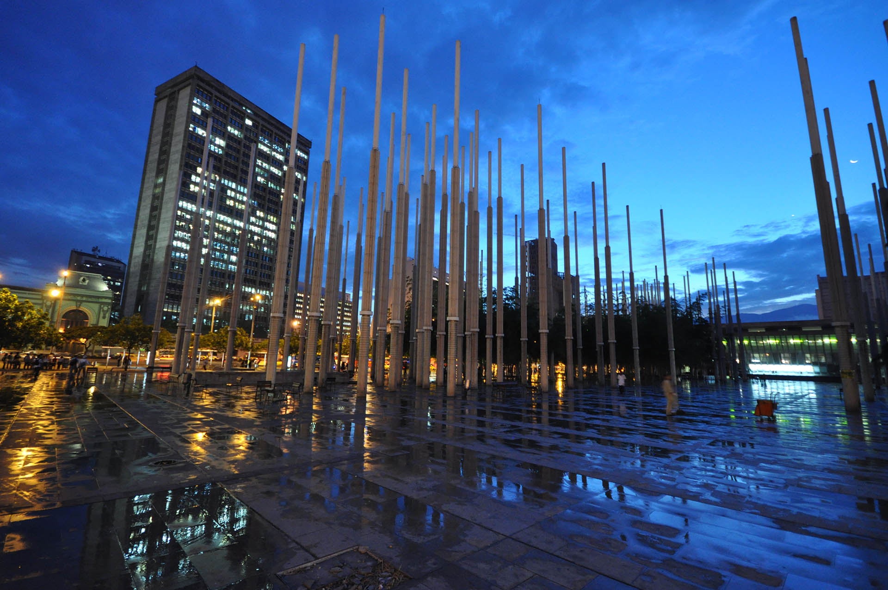

Medellín és la capital del departament d'Antioquia i se li coneix amb el sobrenom de "la ciutat de l'eterna primavera", en gaudir d'un clima agradable als seus 1.500 msnm. Admira la bellesa natural dels turons Nutibara i El Volador, coneix la seva cultura tradicional visitant el poblet paisa ("paisa" és el terme col·loquial per a les gents d'Antioquia), visita el Planetari o el Jardí Botànic, i rumbeja a la Zona Rosa, gaudint de la millor festa de Colòmbia.
Va ser fundada el 2 de març de 1616, quan els conqueridors espanyols havien erigit un petit poblat amb el nom de Sant Llorenç d'Aburrá, fundat per Francisco Herrera Campuzano (avui parc El Poblat) i denominat Vila de La nostra Senyora de la Candelaria de Medellín, el 2 de novembre de 1675 en el lloc d'Aná, que correspon actualment al centre de la ciutat (zona centre-oriental); a través dels anys es donava com a data de fundació la segona, però en el decret 17 de 1966 de l'honorable consell de la ciutat es va decretar com a data oficial la del 2 de març de 1616 a 1826 va ser designada capital d'Antioquia, títol que ostentava Santa Fe d'Antioquia des de l'època colonial. Durant el segle XIX, Medellín es va desenvolupar com un centre dinàmic de comerç, primer exportant or, i posteriorment mercaderies provinents de la industrialització de la ciutat.
